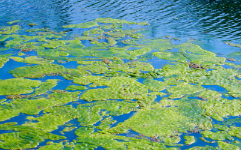

As of 27/3/2024 the blue green alage is at a level of red which means that you shouldn't swim (this is general) and if you get sick you should contact the council about such sickness if you believe it is related to touch or consuming lake water.
Don't avoid swimming in hamilton lake as much a possible becuase it is very toxic. Hamilton lake has both ecoli and arsenic in it, the former is becuase it is a peat lake and is made of poo and the latter is becuase it is had arsenic dumped in it during the sixties. This dumping of aresenic is to stop the growth of plants in the lake to allow people to swim in which failed as the concil added arsenic to the water making it not safely swimmable
Niiwa Health rating